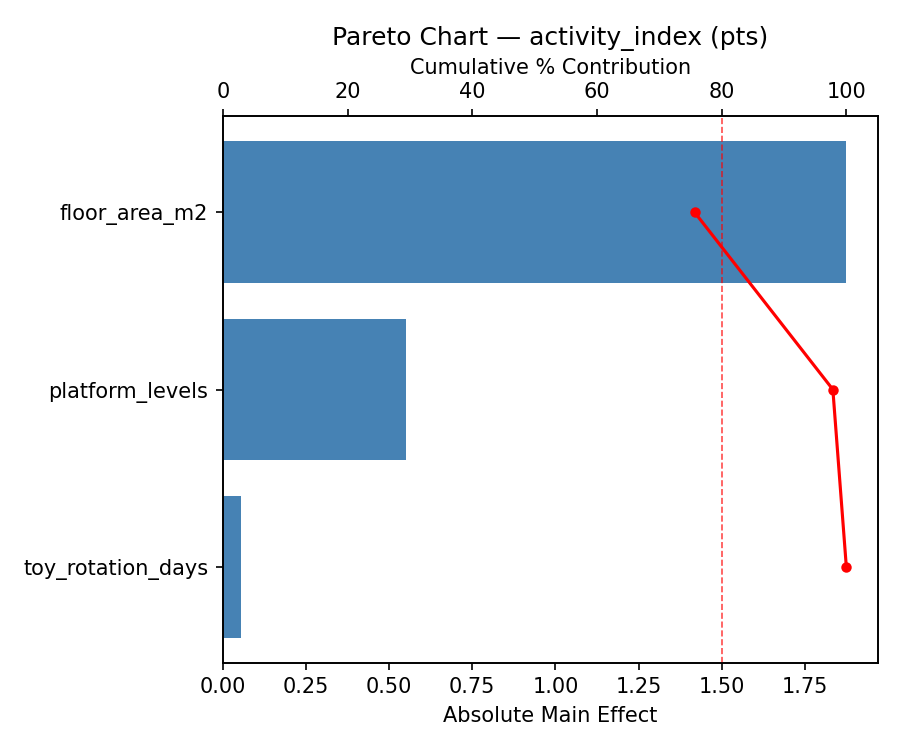
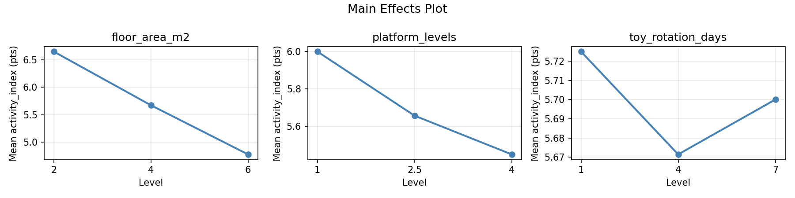
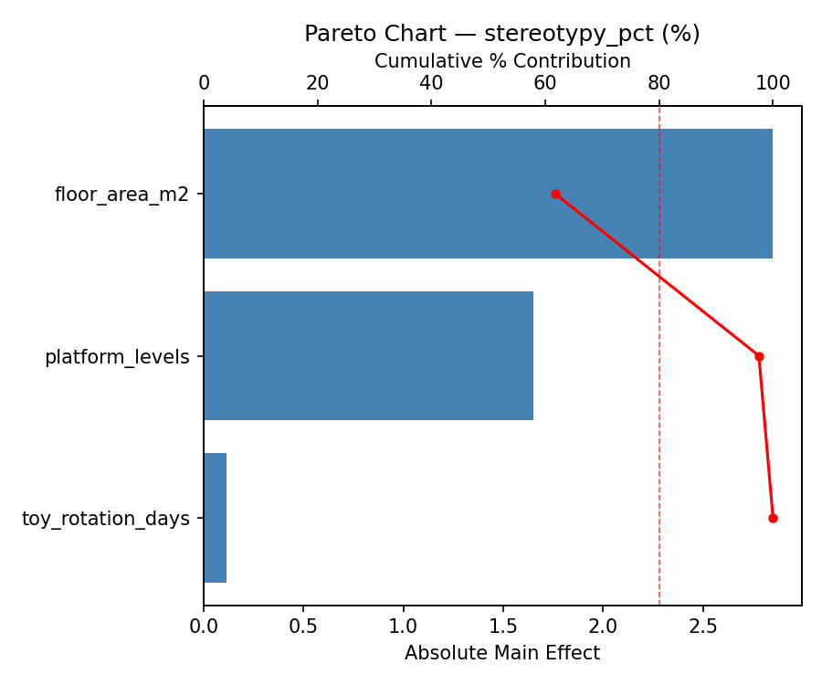
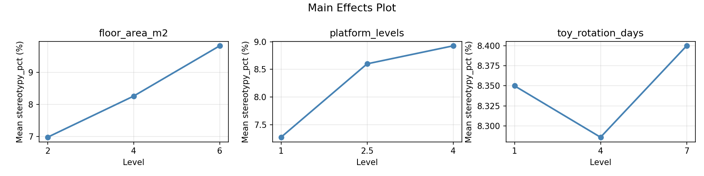
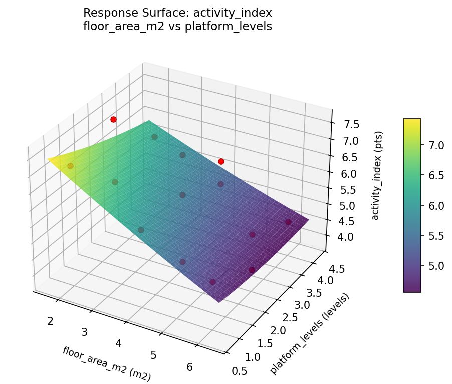
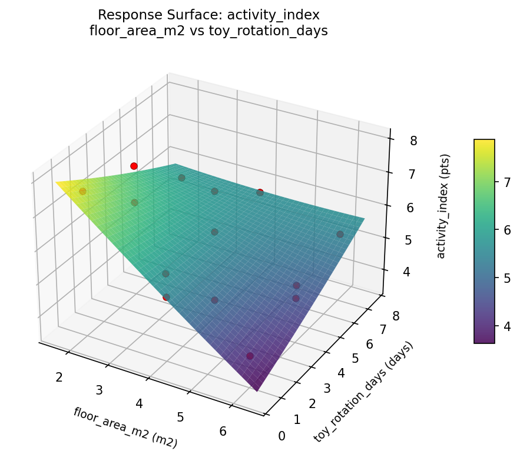
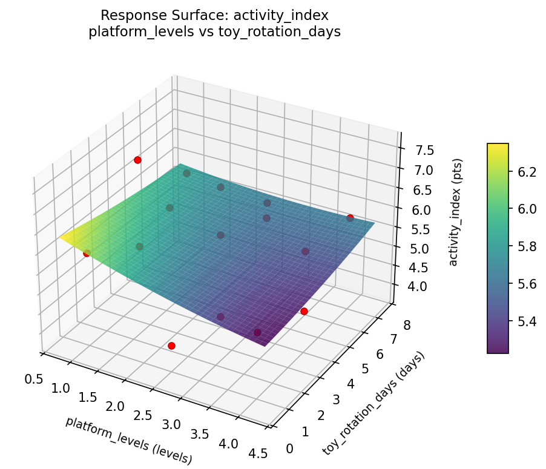
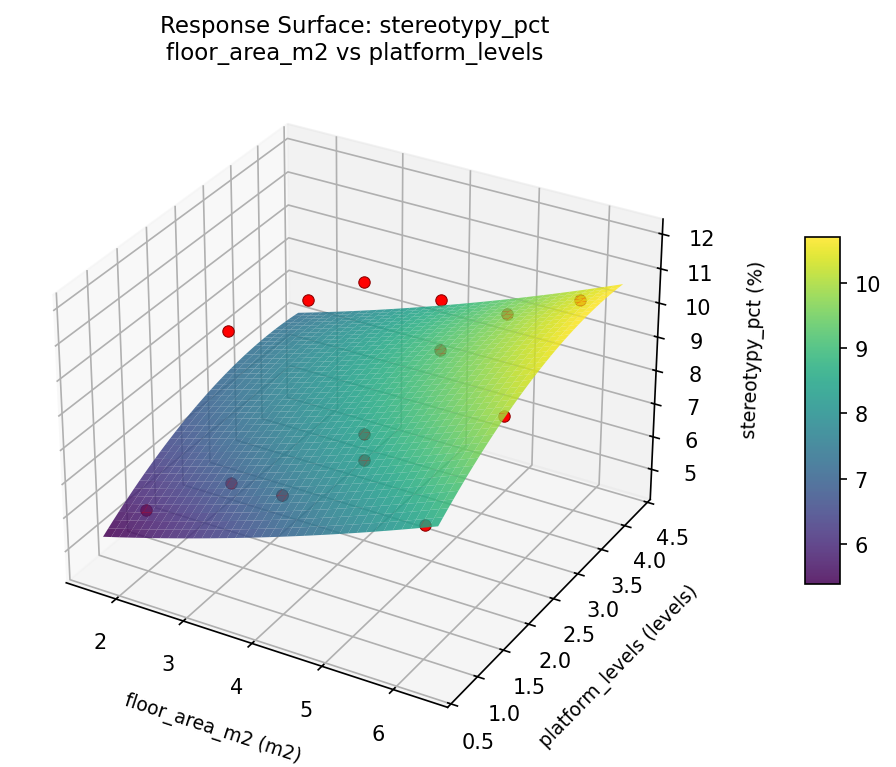
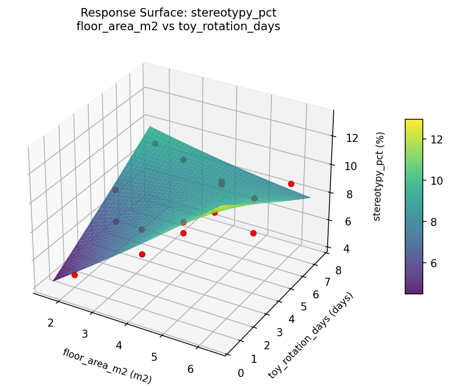
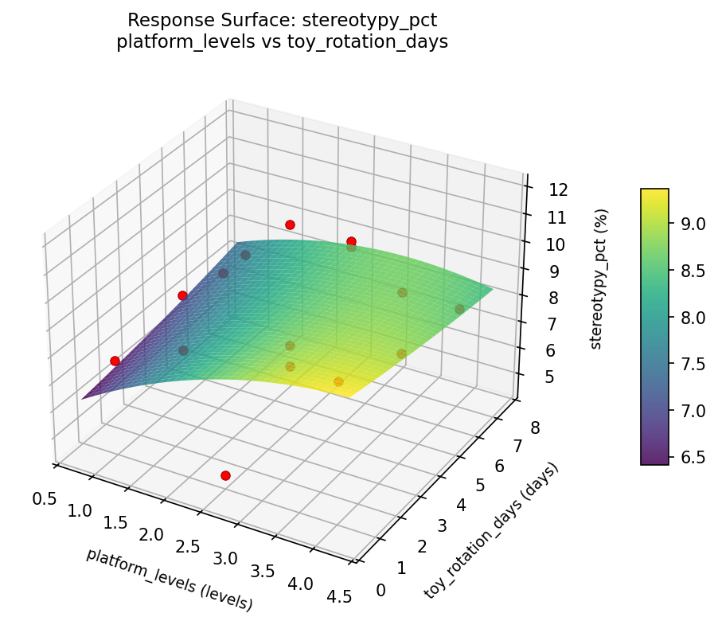

Summary
This experiment investigates rabbit hutch enrichment. Box-Behnken design to maximize rabbit activity and minimize stereotypic behavior by tuning floor area, platform levels, and toy rotation frequency.
The design varies 3 factors: floor area m2 (m2), ranging from 2 to 6, platform levels (levels), ranging from 1 to 4, and toy rotation days (days), ranging from 1 to 7. The goal is to optimize 2 responses: activity index (pts) (maximize) and stereotypy pct (%) (minimize). Fixed conditions held constant across all runs include rabbits = 2, outdoor access = daily.
A Box-Behnken design was chosen because it efficiently fits quadratic models with 3 continuous factors while avoiding extreme corner combinations — requiring only 15 runs instead of the 8 needed for a full factorial at two levels.
Quadratic response surface models were fitted to capture potential curvature and factor interactions. The RSM contour plots below visualize how pairs of factors jointly affect each response.
Key Findings
For activity index, the most influential factors were toy rotation days (44.1%), floor area m2 (40.3%), platform levels (15.6%). The best observed value was 7.6 (at floor area m2 = 6, platform levels = 4, toy rotation days = 4).
For stereotypy pct, the most influential factors were floor area m2 (43.7%), toy rotation days (39.4%), platform levels (16.9%). The best observed value was 4.6 (at floor area m2 = 6, platform levels = 4, toy rotation days = 4).
Recommended Next Steps
- Run confirmation experiments at the predicted optimal settings to validate the model.
- Consider whether any fixed factors should be varied in a future study.
Experimental Setup
Factors
| Factor | Low | High | Unit |
|---|
floor_area_m2 | 2 | 6 | m2 |
platform_levels | 1 | 4 | levels |
toy_rotation_days | 1 | 7 | days |
Fixed: rabbits = 2, outdoor_access = daily
Responses
| Response | Direction | Unit |
|---|
activity_index | ↑ maximize | pts |
stereotypy_pct | ↓ minimize | % |
Configuration
{
"metadata": {
"name": "Rabbit Hutch Enrichment",
"description": "Box-Behnken design to maximize rabbit activity and minimize stereotypic behavior by tuning floor area, platform levels, and toy rotation frequency"
},
"factors": [
{
"name": "floor_area_m2",
"levels": [
"2",
"6"
],
"type": "continuous",
"unit": "m2"
},
{
"name": "platform_levels",
"levels": [
"1",
"4"
],
"type": "continuous",
"unit": "levels"
},
{
"name": "toy_rotation_days",
"levels": [
"1",
"7"
],
"type": "continuous",
"unit": "days"
}
],
"fixed_factors": {
"rabbits": "2",
"outdoor_access": "daily"
},
"responses": [
{
"name": "activity_index",
"optimize": "maximize",
"unit": "pts"
},
{
"name": "stereotypy_pct",
"optimize": "minimize",
"unit": "%"
}
],
"settings": {
"operation": "box_behnken",
"test_script": "use_cases/175_rabbit_hutch_design/sim.sh"
}
}
Experimental Matrix
The Box-Behnken Design produces 15 runs. Each row is one experiment with specific factor settings.
| Run | floor_area_m2 | platform_levels | toy_rotation_days |
|---|
| 1 | 4 | 1 | 1 |
| 2 | 4 | 2.5 | 4 |
| 3 | 6 | 2.5 | 7 |
| 4 | 6 | 2.5 | 1 |
| 5 | 4 | 2.5 | 4 |
| 6 | 4 | 2.5 | 4 |
| 7 | 2 | 2.5 | 7 |
| 8 | 6 | 1 | 4 |
| 9 | 4 | 1 | 7 |
| 10 | 6 | 4 | 4 |
| 11 | 2 | 2.5 | 1 |
| 12 | 4 | 4 | 7 |
| 13 | 2 | 1 | 4 |
| 14 | 2 | 4 | 4 |
| 15 | 4 | 4 | 1 |
Step-by-Step Workflow
1
Preview the design
$ python doe.py info --config use_cases/175_rabbit_hutch_design/config.json
2
Generate the runner script
$ python doe.py generate --config use_cases/175_rabbit_hutch_design/config.json \
--output use_cases/175_rabbit_hutch_design/results/run.sh --seed 42
3
Execute the experiments
$ bash use_cases/175_rabbit_hutch_design/results/run.sh
4
Analyze results
$ python doe.py analyze --config use_cases/175_rabbit_hutch_design/config.json
5
Get optimization recommendations
$ python doe.py optimize --config use_cases/175_rabbit_hutch_design/config.json
6
Multi-objective optimization
With 2 competing responses, use --multi to find the best compromise via Derringer–Suich desirability.
$ python doe.py optimize --config use_cases/175_rabbit_hutch_design/config.json --multi
7
Generate the HTML report
$ python doe.py report --config use_cases/175_rabbit_hutch_design/config.json \
--output use_cases/175_rabbit_hutch_design/results/report.html
Features Exercised
| Feature | Value |
|---|
| Design type | box_behnken |
| Factor types | continuous (all 3) |
| Arg style | double-dash |
| Responses | 2 (activity_index ↑, stereotypy_pct ↓) |
| Total runs | 15 |
Analysis Results
Generated from actual experiment runs using the DOE Helper Tool.
Response: activity_index
Top factors: toy_rotation_days (44.1%), floor_area_m2 (40.3%), platform_levels (15.6%).
Pareto Chart

Main Effects Plot

Response: stereotypy_pct
Top factors: floor_area_m2 (43.7%), toy_rotation_days (39.4%), platform_levels (16.9%).
Pareto Chart

Main Effects Plot

Response Surface Plots
3D surfaces fitted with quadratic RSM. Red dots are observed data points.
activity index floor area m2 vs platform levels

activity index floor area m2 vs toy rotation days

activity index platform levels vs toy rotation days

stereotypy pct floor area m2 vs platform levels

stereotypy pct floor area m2 vs toy rotation days

stereotypy pct platform levels vs toy rotation days

Multi-Objective Optimization
When responses compete, Derringer–Suich desirability finds the best compromise.
Each response is scaled to a 0–1 desirability, then combined via a weighted geometric mean.
Overall Desirability
D = 0.9900
Per-Response Desirability
| Response | Weight | Desirability | Predicted | Dir |
|---|
activity_index |
1.5 |
|
7.90 1.0000 7.90 pts |
↑ |
stereotypy_pct |
1.0 |
|
4.43 0.9752 4.43 % |
↓ |
Recommended Settings
| Factor | Value |
|---|
floor_area_m2 | 2 m2 |
platform_levels | 3.1 levels |
toy_rotation_days | 1 days |
Source: from RSM model prediction
Trade-off Summary
Sacrifice = how much worse than single-objective best.
| Response | Predicted | Best Observed | Sacrifice |
|---|
stereotypy_pct | 4.43 | 4.60 | -0.17 |
Top 3 Runs by Desirability
| Run | D | Factor Settings |
|---|
| #4 | 0.8317 | floor_area_m2=6, platform_levels=2.5, toy_rotation_days=7 |
| #15 | 0.7860 | floor_area_m2=4, platform_levels=4, toy_rotation_days=1 |
Model Quality
| Response | R² | Type |
|---|
stereotypy_pct | 0.6278 | quadratic |
Full Multi-Objective Output
============================================================
MULTI-OBJECTIVE OPTIMIZATION
Method: Derringer-Suich Desirability Function
============================================================
Overall desirability: D = 0.9900
Response Weight Desirability Predicted Direction
---------------------------------------------------------------------
activity_index 1.5 1.0000 7.90 pts ↑
stereotypy_pct 1.0 0.9752 4.43 % ↓
Recommended settings:
floor_area_m2 = 2 m2
platform_levels = 3.1 levels
toy_rotation_days = 1 days
(from RSM model prediction)
Trade-off summary:
activity_index: 7.90 (best observed: 7.60, sacrifice: -0.30)
stereotypy_pct: 4.43 (best observed: 4.60, sacrifice: -0.17)
Model quality:
activity_index: R² = 0.6125 (quadratic)
stereotypy_pct: R² = 0.6278 (quadratic)
Top 3 observed runs by overall desirability:
1. Run #10 (D=0.9545): floor_area_m2=2, platform_levels=2.5, toy_rotation_days=1
2. Run #4 (D=0.8317): floor_area_m2=6, platform_levels=2.5, toy_rotation_days=7
3. Run #15 (D=0.7860): floor_area_m2=4, platform_levels=4, toy_rotation_days=1
Full Analysis Output
=== Main Effects: activity_index ===
Factor Effect Std Error % Contribution
--------------------------------------------------------------
toy_rotation_days 1.4750 0.2770 44.1%
floor_area_m2 1.3500 0.2770 40.3%
platform_levels 0.5214 0.2770 15.6%
=== ANOVA Table: activity_index ===
Source DF SS MS F p-value
-----------------------------------------------------------------------------
floor_area_m2 2 4.2858 2.1429 1.506 0.2786
platform_levels 2 0.6975 0.3488 0.245 0.7883
toy_rotation_days 2 4.4633 2.2316 1.568 0.2664
Lack of Fit 6 3.8161 0.6360 0.447 0.8121
Pure Error 2 2.8467 1.4233
Error 8 6.6628 1.4233
Total 14 16.1093 1.1507
=== Summary Statistics: activity_index ===
floor_area_m2:
Level N Mean Std Min Max
------------------------------------------------------------
2 4 6.1750 0.6898 5.7000 7.2000
4 7 5.9143 1.0946 4.6000 7.6000
6 4 4.8250 1.0340 3.8000 6.1000
platform_levels:
Level N Mean Std Min Max
------------------------------------------------------------
1 4 5.3500 1.4526 3.8000 7.1000
2.5 7 5.8714 1.1800 4.2000 7.6000
4 4 5.7250 0.4924 5.0000 6.1000
toy_rotation_days:
Level N Mean Std Min Max
------------------------------------------------------------
1 4 6.3500 0.9678 5.2000 7.2000
4 7 5.7857 1.1261 3.8000 7.6000
7 4 4.8750 0.6397 4.2000 5.7000
=== Main Effects: stereotypy_pct ===
Factor Effect Std Error % Contribution
--------------------------------------------------------------
floor_area_m2 2.7750 0.5175 43.7%
toy_rotation_days 2.5000 0.5175 39.4%
platform_levels 1.0750 0.5175 16.9%
=== ANOVA Table: stereotypy_pct ===
Source DF SS MS F p-value
-----------------------------------------------------------------------------
floor_area_m2 2 20.6658 10.3329 2.045 0.1917
platform_levels 2 2.4973 1.2486 0.247 0.7868
toy_rotation_days 2 13.9583 6.9792 1.381 0.3053
Lack of Fit 6 9.0052 1.5009 0.297 0.8954
Pure Error 2 10.1067 5.0533
Error 8 19.1119 5.0533
Total 14 56.2333 4.0167
=== Summary Statistics: stereotypy_pct ===
floor_area_m2:
Level N Mean Std Min Max
------------------------------------------------------------
2 4 7.5000 1.3540 5.9000 9.2000
4 7 7.7000 1.8321 4.6000 10.4000
6 4 10.2750 1.8191 8.2000 11.9000
platform_levels:
Level N Mean Std Min Max
------------------------------------------------------------
1 4 8.9750 2.4757 6.5000 11.7000
2.5 7 8.2143 2.4204 4.6000 11.9000
4 4 7.9000 0.2582 7.6000 8.2000
toy_rotation_days:
Level N Mean Std Min Max
------------------------------------------------------------
1 4 7.3750 1.5086 5.9000 9.3000
4 7 8.0000 2.1252 4.6000 11.7000
7 4 9.8750 1.6681 8.0000 11.9000
Optimization Recommendations
=== Optimization: activity_index ===
Direction: maximize
Best observed run: #10
floor_area_m2 = 6
platform_levels = 4
toy_rotation_days = 4
Value: 7.6
RSM Model (linear, R² = 0.2953, Adj R² = 0.1031):
Coefficients:
intercept +5.6933
floor_area_m2 +0.4250
platform_levels -0.2625
toy_rotation_days -0.5875
RSM Model (quadratic, R² = 0.7711, Adj R² = 0.3591):
Coefficients:
intercept +6.1000
floor_area_m2 +0.4250
platform_levels -0.2625
toy_rotation_days -0.5875
floor_area_m2*platform_levels +0.9000
floor_area_m2*toy_rotation_days +0.6000
platform_levels*toy_rotation_days -0.1250
floor_area_m2^2 +0.3625
platform_levels^2 -0.6125
toy_rotation_days^2 -0.5125
Curvature analysis:
platform_levels coef=-0.6125 concave (has a maximum)
toy_rotation_days coef=-0.5125 concave (has a maximum)
floor_area_m2 coef=+0.3625 convex (has a minimum)
Notable interactions:
floor_area_m2*platform_levels coef=+0.9000 (synergistic)
floor_area_m2*toy_rotation_days coef=+0.6000 (synergistic)
Predicted optimum (from quadratic model, at observed points):
floor_area_m2 = 6
platform_levels = 4
toy_rotation_days = 4
Predicted value: 6.9125
Surface optimum (via L-BFGS-B, quadratic model):
floor_area_m2 = 2
platform_levels = 1.22959
toy_rotation_days = 1
Predicted value: 7.1518
Model quality: Good fit — general trends are captured, some noise remains.
Factor importance:
1. toy_rotation_days (effect: 1.2, contribution: 40.4%)
2. floor_area_m2 (effect: 0.9, contribution: 29.9%)
3. platform_levels (effect: 0.9, contribution: 29.7%)
=== Optimization: stereotypy_pct ===
Direction: minimize
Best observed run: #10
floor_area_m2 = 6
platform_levels = 4
toy_rotation_days = 4
Value: 4.6
RSM Model (linear, R² = 0.2871, Adj R² = 0.0926):
Coefficients:
intercept +8.3333
floor_area_m2 -0.7375
platform_levels +0.3500
toy_rotation_days +1.1625
RSM Model (quadratic, R² = 0.8686, Adj R² = 0.6321):
Coefficients:
intercept +7.7667
floor_area_m2 -0.7375
platform_levels +0.3500
toy_rotation_days +1.1625
floor_area_m2*platform_levels -2.3000
floor_area_m2*toy_rotation_days -1.2750
platform_levels*toy_rotation_days +0.5000
floor_area_m2^2 -0.3208
platform_levels^2 +0.8042
toy_rotation_days^2 +0.5792
Curvature analysis:
platform_levels coef=+0.8042 convex (has a minimum)
toy_rotation_days coef=+0.5792 convex (has a minimum)
floor_area_m2 coef=-0.3208 concave (has a maximum)
Notable interactions:
floor_area_m2*platform_levels coef=-2.3000 (antagonistic)
floor_area_m2*toy_rotation_days coef=-1.2750 (antagonistic)
platform_levels*toy_rotation_days coef=+0.5000 (synergistic)
Predicted optimum (from quadratic model, at observed points):
floor_area_m2 = 2
platform_levels = 4
toy_rotation_days = 4
Predicted value: 11.6375
Surface optimum (via L-BFGS-B, quadratic model):
floor_area_m2 = 2
platform_levels = 1
toy_rotation_days = 1
Predicted value: 4.9792
Model quality: Good fit — general trends are captured, some noise remains.
Factor importance:
1. toy_rotation_days (effect: 2.3, contribution: 47.1%)
2. floor_area_m2 (effect: 1.5, contribution: 29.9%)
3. platform_levels (effect: 1.1, contribution: 23.0%)